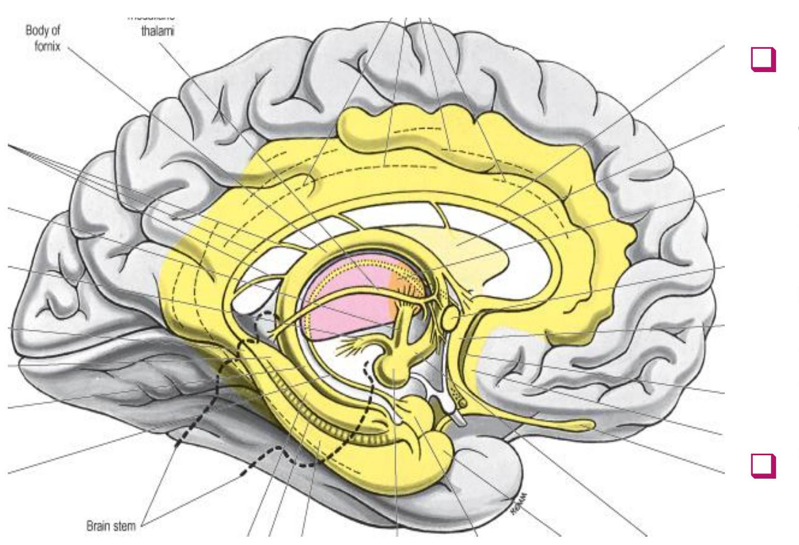
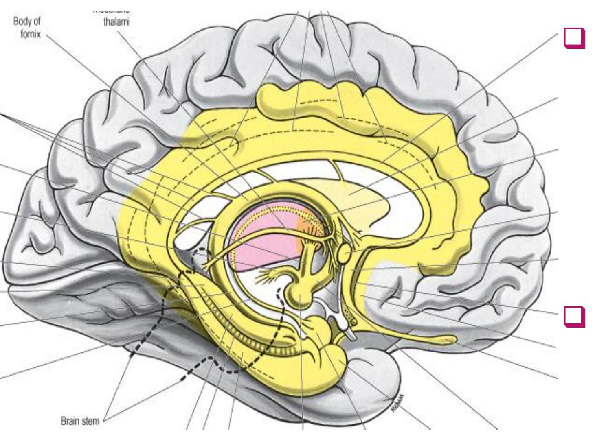
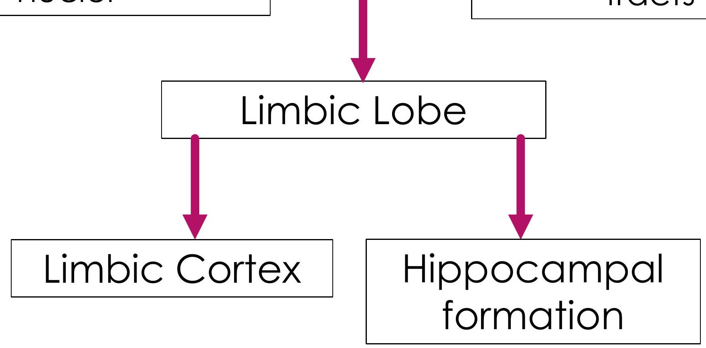
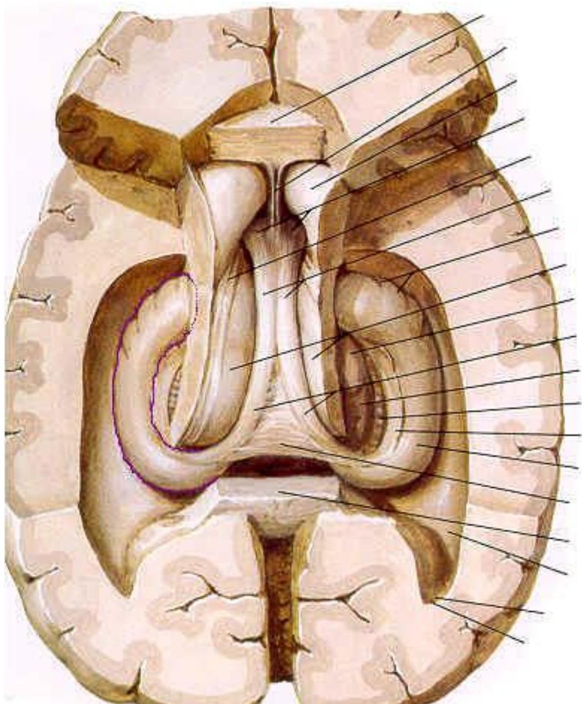
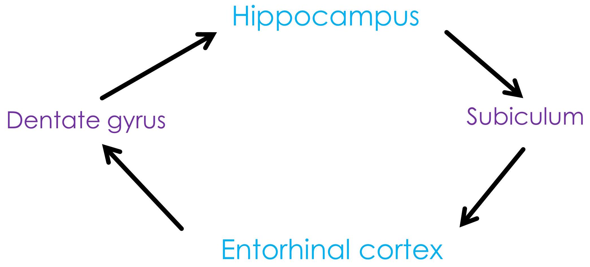
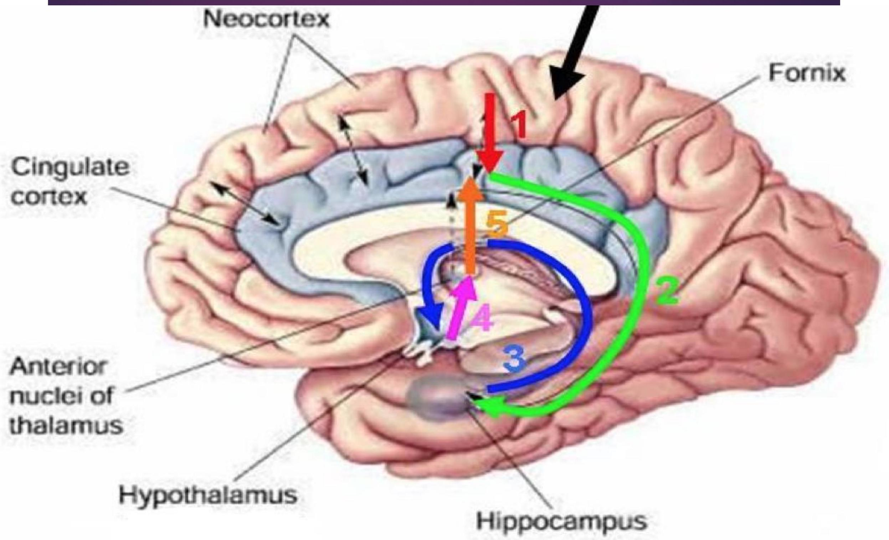
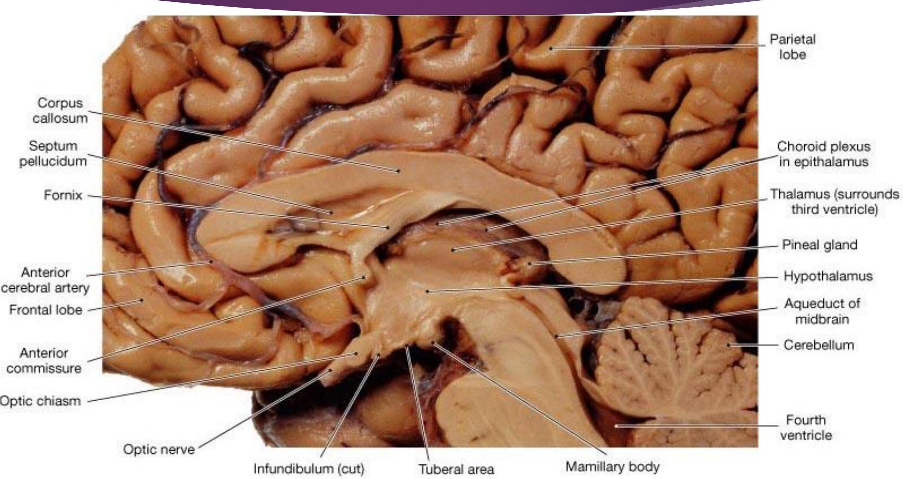
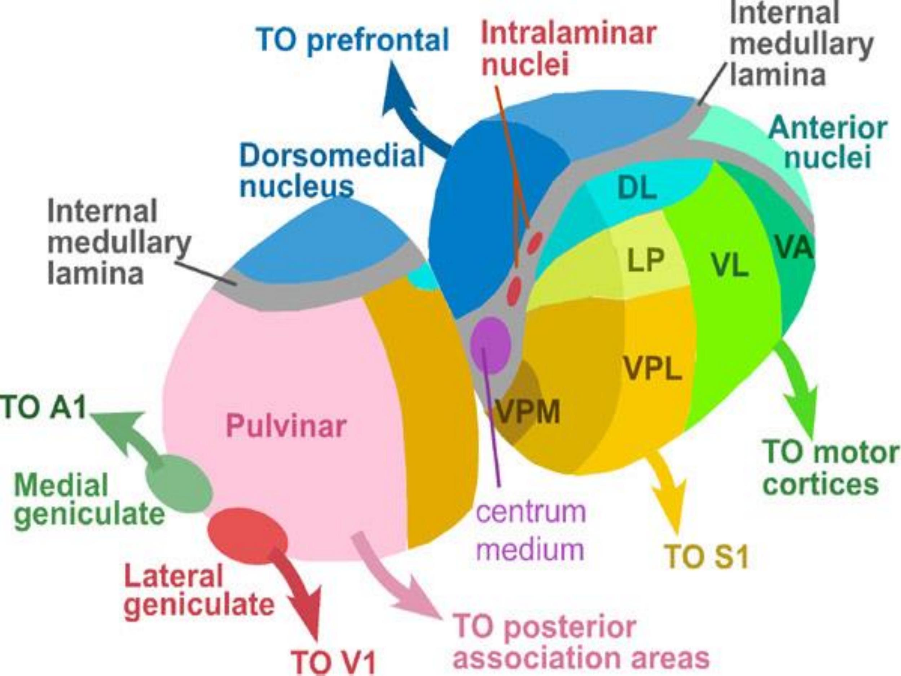
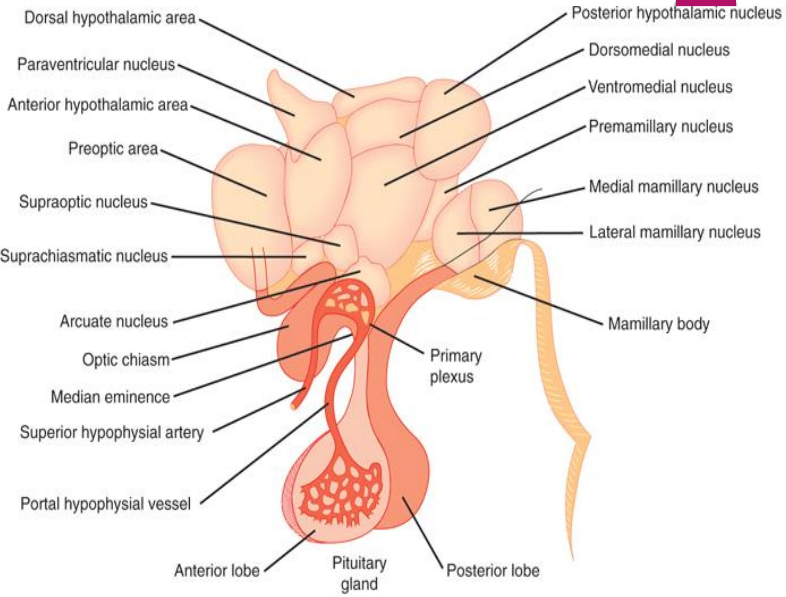

BASIC CONCEPTS OF THE LIMBIC SYSTEM
EXPECTED LEARNING OUTCOMES
a Characteristics
- Functions
- Components
- Main connections/circuits
- Associated clinical aspects
HISTORICAL BACKGROUND

- 1870's: A rim of cortical tissue, associated nuclei and fiber tracts around the cerebral hilum "The limbic lobe"
HISTORICAL BACKGROUND

- 1930's: A circuit that explained the relationship between emotion and memory
- Rhinencephalon (obsolete)
CHARACTERISTICS
- Presence of allocortices
- Prolonged after discharge
- Paucity of neocortical input (relatively independent)
- Neocortical input can modify activity
FUNCTIONS
- Preservation of self (homeostatic) and preservation of species (reproduction)
- Regulate emotions and its visceromotor responses (either endocrine and autonomic)
- Temporary storage of information (learning & memory)
- Regulation of sexual responses
- Regulation of food intake (feeding)
COMPONENTS OF THE LIMBIC SYSTEM
Associated subcortical nuclei
Associated fiber tracts
THE LIMBIC CORTEX
- Cortical tissue on the medial wall of the cerebral hemisphere
HIPPOCAMPAL FORMATION

- Hippocampus proper
- Dentate gyrus
- Subicular nuclear complex
- Entorhinal cortex
- Hippocampal rudiments
SUBCORTICAL NUCLEI
- Amygdala nuclear complex
- Anterior thalamic nuclei
- Septal nuclei
- Hypothalamus
- Habenular nuclei
- Ventral striatum
THE INTRINSIC CIRCUIT

THE PAPEZ CIRCUIT

KLUVER-BUCY SYNDROME
- Results from bilateral destruction of amygdala
- Hypersexuality
- Hyperorality
- Docility
- Dietary changes (hyperphagia)
- Visual agnosia
OTHER CLINICAL ASPECTS
- Schizophrenia
- Amnesia - Alzheimer's disease; Korsakoff psychosis
- Bipolar disorder
- Epilepsy
DIENCEPHALON
DR BEDA OLABU
DEPARTMENT OF HUMAN ANATOMY
UNIVERSITY OF NAIROBI
COMPONENTS OF THE DIENCEPHALON



HYPOTHALAMIC OUTPUT
- Brain stem - reticular formation; autonomic preganglionic neurons
- Anterior thalamic nucleus - to cerebral cortex
- Pituitary gland - both adenohypophysis and neurohypophysis
HYPOTHALAMIC NUCLEI
- Supraoptic - ADH
- Paraventricular-oxytocin
- Mammillary - limbic
- Suprachiasmatic - circadian rhythm
THE END
THE END